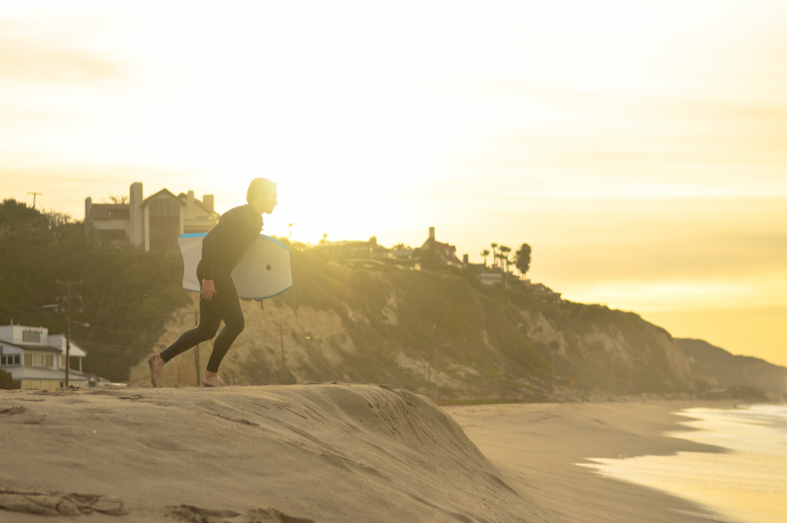
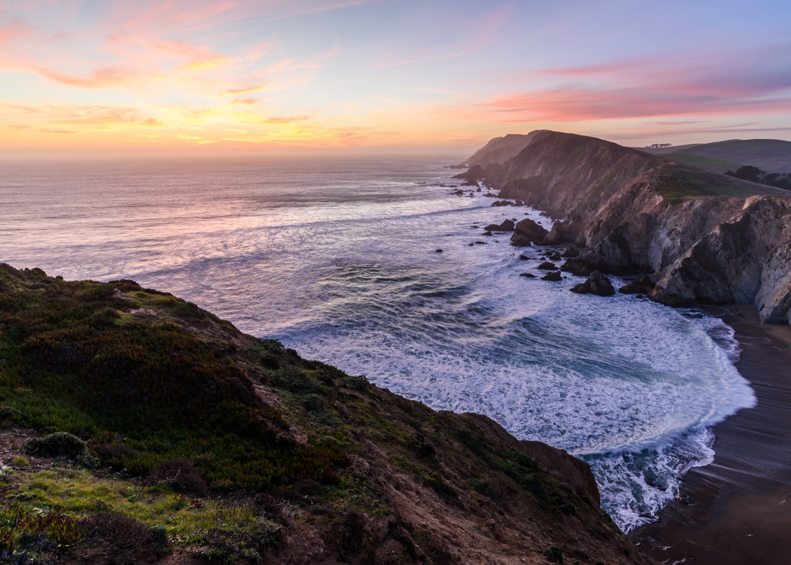

Один океан слева, пустыня впереди и дорога, которая ни разу не повторяется.
Остановка первая
Сан-Франциско
Старт маршрута


Алькатрас
Ночной тур по тюрьме на острове. Бронировать за две-три недели до даты.
Велосипед через Золотые Ворота
По мосту до Саусалито, обратно — на пароме через залив.
Секвойи Muir Woods
Гигантские деревья в тридцати минутах от города. Утром здесь пусто.
Бейсбол Giants — Dodgers
Финал сезона на Oracle Park: мяч улетает прямо в залив.
Ferry Building
Фуд-маркет на набережной: крабовый сэндвич и свежие устрицы.
Остановка вторая
Биг-Сур
Перегон от Сан-Франциско · ≈ 200 км · ~3 часа


Bixby Bridge
Главный мост Калифорнии: бетонная арка над океанским обрывом.
McWay Falls
Водопад высотой двадцать четыре метра падает прямо на укромный пляж.
Pfeiffer Beach
Пляж с фиолетовым песком и каменной аркой Keyhole.
Point Lobos
Морские львы и каланы прямо с прибрежной тропы.
Ночёвка
Останавливаемся в Монтерее или Кармеле на берегу.
Остановка третья
Лос-Анджелес
Перегон через Биг-Сур · ≈ 330 км · ~5 часов


Santa Monica Pier
Колесо обозрения над океаном и официальный конец Route 66.
Venice Beach
Уличная качалка, скейт-парк и артисты на набережной.
El Matador Beach
Закат среди скал и гротов дикого пляжа Малибу.
Griffith Observatory
Панорама города и знак Hollywood в ночной подсветке.
Остановка четвёртая
Сан-Диего
Перегон от Лос-Анджелеса · ≈ 195 км · ~2 часа


La Jolla Cove
Морские львы лежат буквально в метре от тебя.
Снорклинг
Прозрачная бухта с тёплой водой и стаями рыбы.
Sunset Cliffs
Закат на обрывах над Тихим океаном.
Coronado Beach
Золотой пляж у легендарного отеля del Coronado.
Old Town
Рыбные тако и крафтовое пиво в старом городе.
Остановка пятая
Лас-Вегас
Перегон от Сан-Диего · ≈ 540 км · ~5 часов


Фонтаны Bellagio
Ночное водное шоу под музыку в центре Стрипа.
NASCAR · 4 октября
Гонка South Point 400 на Las Vegas Motor Speedway.
Valley of Fire
Красные скалы, волна Fire Wave и древние петроглифы в часе езды.
High Roller
Самое большое колесо обозрения в мире.
Остановка шестая
Зайон и Гранд-Каньон
Перегон от Лас-Вегаса · ≈ 260 км · ~2 ч 45 мин


The Narrows
Идёшь вброд по реке между отвесными стенами каньона.
Angels Landing
Гребень с цепями и видом на всю долину. Нужен пермит.
Canyon Overlook
Короткая тропа к лучшему закатному виду Зайона.
Гранд-Каньон · South Rim
Опциональный бросок к пропасти глубиной 1,6 километра.
Остановка седьмая
Финиш у океана
Возвращение к побережью · дорога разбита на два дня


Дорога домой
Перегон из каньонов делим на два дня с ночёвкой в St. George или Вегасе.
Последний день на пляже
Малибу или Санта-Моника — прощание с океаном.
Вылет
Сдаём машину в аэропорту LAX и летим домой через Стамбул.